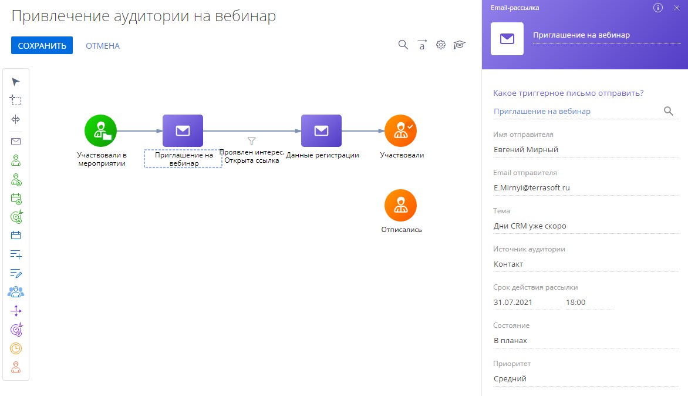

Схема кампании строится на основании элементов и условий переходов между ними.
|
Элементы кампании |
Описание |
|---|---|
 |
Отправляет триггерную рассылку участникам кампании, которые переходят к данному элементу. |
|
|
Добавляет участников кампании из динамической или статической группы, а также по фильтру. |
|
|
Добавляет участников в кампанию автоматически, по триггеру. |
|
|
Добавляет в участники кампании аудиторию мероприятия. |
 |
Добавить с посадочной страницы Добавляет участников в кампанию при заполнении формы на лендинге. |
 |
Добавляет участников из кампании в мероприятие. |
 |
Создает новые записи системы на основании данных участников кампании. |
 |
Вносит изменения в существующие записи. |
 |
Используется для запуска кампании или активации следующего за ним элемента в указанное время однократно или на регулярной основе. |
 |
Выводит из кампании участников, которые соответствуют условиям заданного фильтра, а также тех участников, которые переходят к данному элементу. |

Элемент Email-рассылка
Элемент Email-рассылка позволяет включить в кампанию предварительно созданную в разделе Email триггерную рассылку.
Время выполнения данного шага кампании зависит от настроенных условий переходов к нему.
Для настройки элемента Email-рассылка:
- Добавьте элемент на диаграмму кампании.
В поле Какое триггерное письмо отправить выберите в разделе Email триггерное письмо, которое будет отправлено участникам рассылки (Рис. 1).
Остальные поля недоступны для редактирования и заполняются значениями, указанными при создании триггерного письма.
Рис. 1 — Настройка элемента Email-рассылка- При настройке элемента Email-рассылка вы можете выбрать отклики для перевода участников, если у элемента есть исходящие условные потоки. Вы можете настроить переход вне зависимости от отклика получателя рассылки либо переводить только участников с конкретными откликами, выбрав соответствующие признаки в области свойств условного перехода.
- При выборе отклика Есть переход дополнительно укажите одну или несколько ссылок из шаблона email-сообщения (Рис. 2).
Только те участники, которые перешли по выбранным ссылкам, смогут перейти по данному условному потоку.
Рис. 2 — Переход в зависимости от отклика получателя рассылкиВ рассылках с динамическим контентом для каждой реплики шаблона ссылкам присваиваются уникальные параметры. При заполнении поля URL перехода для рассылки с динамическим контентом вы увидите перечень ссылок из всех реплик шаблона. Выберите все доступные варианты ссылки, чтобы получатели любой версии письма смогли перейти по данному условному потоку.
Задержка по времени считается с момента перехода участника на элемент. Например, если установить задержку в 3 дня для выполнения потока с условием перехода “Email открыт”, то перейдут все участники, которые откроют сообщение в течение 3-х дней.
Элемент Добавление аудитории
Стартовый элемент Добавление аудитории предназначен для автоматического добавления участников кампании из динамической или статической группы либо по заданным настройкам фильтрации (Рис. 3). Количество элементов Добавление аудитории, используемых в схеме кампании, не ограничено. В аудиторию кампании всегда добавляются контакты, а связанные сущности, например, лиды, контрагенты или заказы, сохраняются в системе.
Для настройки элемента Добавление аудитории:
- Добавьте элемент на диаграмму кампании.
- В поле Из какого объекта добавить аудиторию? укажите объект системы, из которого будет импортирована аудитория кампании. К примеру, вы можете импортировать лиды. В этом случае в аудиторию кампании будут добавлены контакты, связанные с ними. Список объектов, доступных для выбора, указывается в справочнике Настройки объекта для сигнала кампании.
- В поле Из какого источника добавить аудиторию? укажите “Папка”, если бы хотите добавить контакты из предварительно настроенной группы, или “Фильтр”, чтоб настроить фильтрацию записей по заданным параметрам.
- Если вы указали значение “Папка”, то в поле Из какой группы добавлять участников? выберите название нужной группы.
- Если вы выбрали значение “Фильтр”, то настройте параметры фильтрации. Например, выберите только лиды из нужного города и с определенной зрелостью потребности.
-
По умолчанию участники из определенной группы не могут повторно участвовать в кампании после выхода из нее. Установите признак Повторный вход в кампанию, если хотите, чтобы участники могли проходить по шагам кампании многократно. В поле Количество дней перед повторным входом можно указать количество дней до повторного входа участника в кампанию. Например, вы можете настроить запуск NPS кампании каждые 90 дней, отсчет которых начинается с момента добавления участника.
Если для участников настроен повторный вход в кампанию, но они еще не завершили выполнение шагов, то для них участие в кампании будет приостановлено. Подробнее: Повторный вход в кампанию.
Повторный вход в кампанию
Вы можете установить признак Повторный вход в поле Правила участия при заполнении свойств элемента Добавить по триггеру (Рис. 4).
Признак Повторный вход установлен — при при повторном добавлении участника по триггеру его текущее участие в кампании будет приостановлено. Используйте эту возможность, если вам необходимо, чтобы при повторном добавлении контакт начинал кампанию сначала. Например, при каждой регистрации лида контакт может получать письмо-приветствие.
Признак Повторный вход снят — при повторном входе участника будет выполнен фрагмент кампании до задержки по времени, а контакт продолжит движение по шагам кампании. Используйте эту возможность, к примеру, при отправке писем-подтверждений (транзакционных писем). В этом случае при повторной регистрации лида по триггеру контакт получит соответствующие письмо и продолжит двигаться по шагам кампании дальше, не возвращаясь к ее старту. В противном случае контакт изменит свое положение на диаграмме, и возникнет ошибка при логики кампании.
Добавить объекты в справочник Настройки объекта для сигнала кампании
Перечень доступных объектов вы можете отредактировать в справочнике Настройки объекта для сигнала кампании (Рис. 5).
Чтобы добавить новый объект:
- Перейдите в дизайнер системы, например, по кнопке
 .
. - В группе “Настройка системы” нажмите “Справочники”.
- Откройте наполнение справочника Настройки объекта для сигнала кампании.
- Нажмите кнопку Добавить.
- Заполните следующие поля:
-
В столбце Название укажите название объекта. Это название отображается в поле Добавлять участников при добавлении/изменении элемента области свойств элемента Добавить по триггеру.
-
В столбце Объект укажите, как объект называется в базе данных. Чтобы узнать название объекта в базе данных, используйте мастер разделов или мастер деталей (Рис. 6).
Рис. 6 — Определение названия объекта в мастере раздела -
Название колонки, по которой необходимый объект связан с объектом “Контакт”, укажите в столбце Путь к колонке Контакт.
-
Элемент Добавить по триггеру
Стартовый элемент Добавить по триггеру добавляет участников в кампанию автоматически, по триггеру.
В аудиторию кампании всегда добавляются контакты, а связанные сущности, например, лиды, контрагенты или заказы, сохраняются в системе. Например, если в свойствах элемента Добавить по триггеру указать объект “Лид”, то Creatio добавит в участники кампании контакт, указанный в профиле лида. Параметры взаимосвязи добавленного участника и записи, которая послужила триггером для добавления, указываются отдельно для каждого объекта.
Добавление участников в кампанию происходит сразу же при срабатывании триггера. На вкладке Участники страницы кампании список аудитории обновляется при запуске кампании (вручную или в указанное время).
Есть два типа событий, наступление которых активирует триггеры:
-
Изменение существующей записи. Creatio добавляет участников в аудиторию кампании всякий раз, когда обновляется (изменяется) существующая запись. Поля, изменения в которых отслеживаются, указываются в ходе настройки элемента. При этом обновленная запись должна соответствовать установленным условиям фильтрации.
-
Добавление новой записи. Creatio добавляет участников в аудиторию кампании всякий раз при добавлении новой записи в определенный раздел, деталь или справочник. При этом добавленная запись должна соответствовать установленным условиям фильтрации.
Cобытие-триггер “Изменение записи”
Для настройки элемента Добавить по триггеру при изменение записи (Рис. 7):
- Добавьте элемент на диаграмму кампании.
-
В поле Добавлять участников при добавлении/изменении объекта выберите объект, запись которого должна служить триггером для добавления нового участника кампании. Список значений, доступный для выбора в данном поле, указывается в справочнике Настройки объекта для сигнала кампании. Например, для добавления участников кампании при изменении записи лида (при переходе лида на стадию Взращивание), выберите объект “Лид”. Все лиды, добавляемые в кампанию, должны иметь связь с контактом, которая настраивается в справочнике Настройки объекта для сигнала кампании.
-
В поле Какое событие должно произойти выберите “Изменение записи” и перейдите к заполнению отобразившихся полей.
-
В поле Триггер сработает при изменении следующих колонок укажите колонки, значения которых должны быть изменены для того, чтобы произошло событие “Изменение записи”. Например, для добавления участников кампании при изменении стадии лида выберите колонку “Стадия лида”.
-
В поле После изменения запись должна соответствовать условиям укажите условия, которым должна соответствовать запись для активации элемента Добавить по триггеру. Например, для добавления участников кампании при переходе лида на стадию Взращивание установите фильтр “Стадия лида = Взращивание”. Если фильтр не настроен, то любые изменения в указанных колонках повлекут за собой добавление нового участника кампании.
-
По умолчанию участники из определенной группы не могут повторно участвовать в кампании после выхода из нее. Установите признак Повторный вход в кампанию, если хотите, чтобы участники могли проходить по шагам кампании многократно. В поле Количество дней перед повторным входом можно указать количество дней до повторного входа участника в кампанию. Например, вы можете настроить запуск NPS кампании каждые 90 дней, отсчет которых начинается с момента добавления участника.
Если для участников настроен повторный вход в кампанию, но они еще не завершили выполнение шагов, то для них участие в кампании будет приостановлено. Подробнее: Повторный вход в кампанию.
В результате всякий раз, когда новый лид перейдет на стадию Взращивание, элемент Добавить по триггеру добавит контакт лида в аудиторию кампании.
Cобытие-триггер “Добавление записи”
Для настройки элемента Добавить по триггеру при добавлении записи (Рис. 8):
- Добавьте элемент на диаграмму кампании.
-
В поле Добавлять участников при добавлении/изменении объекта выберите объект, запись которого должна служить триггером для добавления нового участника кампании. Список значений, доступный для выбора в данном поле, указывается в справочнике Настройки объекта для сигнала кампании. Например, для добавления участников кампании при добавлении записи заказа, выберите объект “Заказ”. Все заказы, добавляемые в кампанию, должны иметь связь с контактом, которая настраивается в справочнике Настройки объекта для сигнала кампании.
-
В поле Какое событие должно произойти выберите “Добавление записи” и перейдите к заполнению отобразившихся полей.
-
В поле Добавленная запись должна соответствовать условиям укажите условия, которым должна соответствовать запись для активации элемента Добавить по триггеру. Например, для добавления участников кампании при добавлении нового заказа только на сайте или в мобильном приложении установите фильтр “Источник заказа = Сайт; Мобильное приложение”. Если фильтр не настроен, то каждая новая запись заказа повлечет за собой добавление нового участника кампании.
-
По умолчанию участники из определенной группы не могут повторно участвовать в кампании после выхода из нее. Установите признак Повторный вход в кампанию, если хотите, чтобы участники могли проходить по шагам кампании многократно. В поле Количество дней перед повторным входом можно указать количество дней до повторного входа участника в кампанию. Например, вы можете настроить запуск NPS кампании каждые 90 дней, отсчет которых начинается с момента добавления участника.
Если для участников настроен повторный вход в кампанию, но они еще не завершили выполнение шагов, то для них участие в кампании будет приостановлено. Подробнее: Повторный вход в кампанию.
В результате всякий раз при добавлении нового заказа только на сайте или в мобильном приложении элемент Добавить по триггеру добавит контакт заказа в аудиторию кампании.
Особенности элемента Добавить по триггеру
Как только участник добавляется в аудиторию кампании, он выполняет все шаги, пока не дойдет до элемента или перехода, для которого настроены условия задержки по времени.
Так происходит даже в том случае, если элемент Добавить по триггеру многократно добавляет один и тот же контакт в участники кампании (например, если в разное время два разных лида с одним и тем же контактом активируют элемент).
- Когда такой участник впервые достигает перехода с условием, остальные экземпляры этого участника не смогут перейти к этому условному переходу. Если какой-то элемент кампании не должен выполняться для участника более одного раза, то разместите элемент Переход с условием между ним и элементом Добавление по триггеру. Например, на Рис. 7 один и тот же участник не сможет дважды попасть на переход с условием “Задержка в 2 дня”.
Элемент Добавить из мероприятия
Стартовый элемент Добавить из мероприятия добавляет аудиторию маркетинговых мероприятий в участники кампании. Элемент Добавить из мероприятия срабатывает при активации триггера — добавлении новых записей в аудиторию участников мероприятия (Рис. 9). Он действует аналогично элементу Добавить по триггеру, для которого настроены условия добавления участников из аудитории мероприятия.
Добавление участников в кампанию происходит сразу же при добавлении их в участники мероприятия. На вкладке Участники страницы кампании список аудитории обновляется при запуске кампании (вручную или в указанное время).
Для настройки элемента Добавить из мероприятия:
- Добавьте элемент на диаграмму кампании.
- В поле С каким мероприятием связать? укажите мероприятие, участники которого будут добавлены в аудиторию кампании. При добавлении контакта на деталь Контакты вкладки Аудитория мероприятия он сразу же будет добавлен в участники кампании. После того как поле будет заполнено, область свойств элемента отобразит даты, тип и ответственного за мероприятие. Эти поля недоступны для редактирования и заполняются значениями, указанными при создании мероприятия.
- Установите признак в поле Повторный вход, если вы хотите, чтобы при повторном добавлении контакта в участники мероприятия его текущее участие в кампании приостанавливалось, и выполнение шагов кампании начиналось заново. Подробнее: Повторный вход в кампанию.
Элемент Добавить с посадочной страницы
Стартовый элемент Добавить с посадочной страницы используется для интеграции посадочных страниц с кампаниями (Рис. 10).
Элемент Добавить с посадочной страницы срабатывает при активации триггера — заполнении веб-форм на лендинге. Он действует аналогично элементу Добавить по триггеру, для которого настроены условия добавления участников при создании связанного объекта. При заполнении веб-формы на лендинге контакт сразу же будет добавлен в участники кампании. На вкладке Участники страницы кампании список аудитории обновляется при запуске кампании (вручную или в указанное время).
Для настройки элемента Добавить из мероприятия:
- Добавьте элемент на диаграмму кампании.
- В поле С каким лендингом связать? выберите одну из предварительно добавленных посадочных страниц. После того как параметр будет заполнен, область свойств элемента отобразит адрес посадочной страницы и ее состояние и объект системы, по которому настроен лендинг. Эти поля недоступны для редактирования и заполняются значениями, указанными при создании посадочной страницы.
- Установите признак в поле Повторный вход, если вы хотите, чтобы при повторном добавлении контакта в участники мероприятия его текущее участие в кампании приостанавливалось, и выполнение шагов кампании начиналось заново. Подробнее: Повторный вход в кампанию.
Вы можете настроить условия фильтрации по объекту, указанному в свойствах элемента Добавить с посадочной страницы при переходе к следующему элементу кампании, например, как показано на Рис. 11.
Элемент Добавить в мероприятие
Элемент Добавить в мероприятие добавляет участников кампании в мероприятие (Рис. 12).
Для настройки элемента Добавить в мероприятие:
- Добавьте элемент на диаграмму кампании.
- В поле С каким мероприятием связать? выберите мероприятие, в участники которого необходимо добавить аудиторию кампании. После того как поле будет заполнено, область свойств элемента отобразит даты, тип и ответственного за мероприятие. Эти поля недоступны для редактирования и заполняются значениями, указанными при создании мероприятия.
Рис. 12 — Настройка элемента Добавить в мероприятие
- При настройке элемента Добавить в мероприятие вы можете выбрать отклики для перевода участников, если у элемента есть исходящие условные потоки. Возможные отклики аудитории мероприятия будут добавлены в список условий (Рис. 13).
Рис. 13 — Использование элемента Добавить в мероприятие с условными переходами

Таким образом, по потоку перейдут только участники, чей отклик соответствует условиям перехода. При переходе учитываются отклики, зафиксированные на момент выполнения кампании для участников, которые еще не перешли к следующим элементам. Например, если установить задержку в 3 дня для выполнения потока с условием перехода “Нет отклика”, то все участники, у которых по прошествии 3-х дней будет указан отклик “Нет отклика”, перейдут по данному потоку.
Элемент [Добавить данные]
Элемент Добавить данные создает новые записи в Creatio и заполняет их данными, содержащимися в записи контакта — участника кампании или в других записях, которые напрямую связаны с контактом (Рис. 15).
Для настройки элемента Добавить данные:
- Добавьте элемент на диаграмму кампании.
- В поле В какой объект добавить данные? выберите необходимый объект (раздел, деталь, справочник). Например, чтобы в системе создавалась новая активность, выберите объект “Активность”.
- В области Для каких колонок установить значения? кликните + и выберите поля, которые будут заполняться в созданной записи. Например, для связи новой активности с контрагентом участника кампании выберите поле Контрагент. Все выбранные поля отобразятся в области свойств элемента Добавить данные. По умолчанию элемент Добавить данные позволяет добавлять данные в записи четырех объектов системы — “Звонок”, “Активность”, “Контакт в группе” и “Лид”. Список доступных объектов можно настроить в справочнике Элемент “Добавить данные” — разрешенные объекты.
- В области Для каких колонок установить значения? настройте способы заполнения данными каждого поля записи, которую будет создавать элемент Добавить данные. Все обязательные поля новой записи должны быть заполнены. Вы можете их заполнить следующими способами:
-
Вручную. Вы можете указать значение поля вручную, используя те же элементы управления, что и на стандартной странице записи. Например, для создания активности с типом “Звонок” выберите значение “Звонок” в поле Тип.
-
Стандартный макрос. Для некоторых колонок существуют преднастроенные макросы. Например, выберите макрос “Дата и время” в поле Начало, чтобы оно заполнялось датой и временем добавления новой записи.
-
Пользовательский макрос. Используйте пользовательские макросы для заполнения полей новой записи данными, которые содержатся в записи контакта — участника кампании или в других объектах, связанных с контактом. Например, вы можете заполнить поле Ответственный новой активности теми же значениями, которые указаны в поле Ответственный контакта — участника кампании (Рис. 14).
-
Добавить объекты в справочник Элемент “Добавить данные” — разрешенные объекты
Перечень доступных объектов для добавления данных при помощи элемента Добавить данные вы можете настроить в справочнике Элемент “Добавить данные” — разрешенные объекты (Рис. 16).
Чтобы добавить новый объект:
- Перейдите в дизайнер системы, например, по кнопке .
- В группе “Настройка системы” нажмите “Справочники”.
- Откройте наполнение справочника Элемент “Добавить данные” — разрешенные объекты.
- Нажмите кнопку Добавить.
- Заполните следующие поля:
-
В столбце Название укажите название объекта. Это название отображается в поле В какой объект добавить данные? области свойств элемента Добавить данные.
-
В столбце Объект укажите, как объект называется в базе данных. Чтобы узнать название объекта в базе данных, используйте мастер разделов или мастер деталей (Рис. 17).
Рис. 17 — Определение названия объекта в мастере раздела -
Название колонки, по которой необходимый объект связан с объектом “Контакт”, укажите в столбце Путь к колонке Контакт. Обычно эта колонка называется “Contact”.
-
В столбце Разрешенные колонки перечислите список колонок через запятую. Здесь определяется, какие колонки объекта доступны для раздела выбора в поле Для каких колонок установить значения? при настройке свойств элемента Добавить данные. Чтобы все колонки объекта были доступны для выбора, установите в столбце “*”.
-
В столбце Запрещенные колонки перечислите список колонок через запятую. Эти колонки будут недоступны для выбора в поле Для каких колонок установить значения?. Указанные в этом столбце значения имеют более высокий приоритет по сравнению со значениями, перечисленными в столбце Разрешенные колонки. Даже если в столбце Разрешенные колонки настроена доступность всех колонок объекта (установлено значение “*”), то колонки, перечисленные в столбце Запрещенные колонки, не будут доступны для выбора при настройке элемента Добавить данные.
-
Элемент [Изменить данные]
Элемент Изменить данные вносит изменения в существующие записи раздела, детали или справочника. Элемент Изменить данные позволяет использовать данные контакта — участника кампании, а также связанных с ним записей, для заполнения полей записи, которая подлежит изменению (Рис. 18).
Для настройки элемента Изменить данные:
- Добавьте элемент на диаграмму кампании.
- В поле В каком объекте изменить данные? выберите объект, в записях которого Creatio будет изменять данные. Для всех объектов, кроме объекта “Контакт”, подлежащая изменениям запись должна быть связана с контактом — участником кампании. Например, если выбран объект “Лид”, то элемент изменит данные лида, связанного с контактом — участником кампании. По умолчанию элемент Изменить данные позволяет менять данные объекта “Контакт”. Список доступных объектов можно отредактировать в справочнике Элемент “Изменить данные” — разрешенные объекты. Добавление объектов в справочник осуществляется по аналогии со справочником Элемент “Добавить данные” — разрешенные объекты.
- В поле Для каких колонок установить значения? укажите список полей записи, значения которых подлежат изменению. Например, для изменения типа контакта выберите поле Тип. Поля, указанные в данной области, заполнятся пользовательскими значениями. Значения в остальных полях записи не будут меняться при выполнении кампании. Заполнение полей осуществляется по аналогии с элементом Добавить данные.
Элемент [Таймер]
Элемент Таймер позволяет гибко настраивать время выполнения любого шага кампании (Рис. 19). Вы можете перевести участников на следующие шаги кампании в указанное в свойствах таймера время и с заданной периодичностью.
Таймер можно настроить для однократного или регулярного запуска в указанное время (день, неделю, месяц и т. д.). Перечень полей в области настройки свойств элемента Таймер отличается в зависимости от выбранной периодичности его запуска.
Для настройки элемента Таймер:
- Добавьте элемент на диаграмму кампании.
- В поле Периодичность запуска таймера укажите условия срабатывания элемента, например, “Однократно”. Перечень основных настроек элемента отличается в зависимости от выбранной периодичности запуска таймера. Можно установить следующие варианты запуска:
- В поле Время запуска укажите время, в которое таймер будет срабатывать. Можно выбрать один из следующих вариантов:
-
“Период” — таймер будет срабатывать при каждом выполнении кампании в течение указанного временного диапазона. Например, для кампании установлен период выполнения по умолчанию — 1 час, а время запуска кампании — 13:00. Если в настройках времени запуска таймера выбрать вариант “Период” и указать время с 15:40 по 16:40, то таймер сработает три раза (по одному на каждое выполнение кампании): в 14:00, 15:00 и 16:00.
-
“Точное время” — конкретное время дня, в которое сработает таймер, независимо от заданного периода выполнения кампании по умолчанию. Например, точное время запуска элемента Таймер — 14:40. Период выполнения кампании по умолчанию — 1 час, а время запуска кампании — 13:00. В этом случае все шаги кампании, которые предшествуют таймеру на диаграмме, будут выполнены до 14:00, а в 14:40 таймер переведет участников кампании на следующие шаги.
-
-
В поле Период действия таймера определите период, в который таймер будет срабатывать. Укажите дату и время начала и завершения действия таймера, если необходимо ограничить период, когда таймер будет срабатывать. Например, можно настроить, чтобы таймер срабатывал только в течение следующих двух месяцев. Настроив период действия таймера, можно деактивировать одну или несколько ветвей кампании, не останавливая всю кампанию. Для настройки периода действия таймера установите признаки рядом с полями Дата и время начала и Дата и время завершения.
- Дата и время начала — в указанные дату и время таймер начнет срабатывать с периодичностью, настроенной в поле Периодичность запуска таймера.
- Дата и время завершения — в указанные дату и время таймер прекратит срабатывать. Все участники кампании, которые перейдут на шаг Таймер после завершения периода действия таймера, не будут переведены на следующие шаги кампании.
- В поле Установить часовой пояс установите признак, если часовой пояс выполнения шага Таймер должен отличаться от часового пояса кампании. Если участники кампании находятся в разных часовых поясах, то используйте несколько элементов Таймер, чтобы шаги кампании выполнялись в удобное для участников время.
“Однократно”
Установите вариант запуска таймера “Однократно” и укажите дату и время запуска, если необходимо перевести участников на следующие шаги кампании только один раз в определенное время. Например, так можно настроить отправку email-уведомления о мероприятии, запланированном на определенную дату.
Все участники кампании, которые перейдут на шаг Таймер после указанного времени, не будут переведены на следующий шаг кампании.
“Каждый день”
Установите вариант запуска таймера “Каждый день”, если необходимо переводить участников на следующие шаги кампании один раз в день, во время или временной промежуток, установленный в настройках Время запуска. Например, так можно настроить отправку email-сообщений только в рабочие часы.
“Неделя”
Установите “Неделя” в поле Периодичность запуска таймера, чтобы участники переходили на следующие шаги кампании еженедельно, в указанные дни, в соответствии с настройками поля Время запуска (Рис. 20). Например, так можно настроить отправку маркетинговых рассылок только по рабочим дням.
“Месяц”
Установите вариант запуска таймера “Месяц”, если необходимо настроить, чтобы таймер срабатывал в определенные дни месяца (например, в первый понедельник каждого третьего месяца) (Рис. 21), во время, указанное в настройках поля Время запуска. Например, так можно настроить отправку новостной рассылки в каждый десятый день месяца.
Дополнительные настройки, если выбрана периодичность запуска таймера “Месяц”:
Запускать каждый — укажите периодичность запуска таймера в месяцах. Например, можно настроить, чтобы таймер срабатывал раз в три месяца.
День запуска — выберите дни, когда таймер будет срабатывать.
-
День месяца — таймер сработает в определенный день месяца (например, каждый десятый день).
-
День недели — таймер сработает в определенный день недели (например, в каждую третью пятницу месяца).
-
Первый/последний рабочий день — таймер сработает в первый или последний рабочий или календарный день месяца.
“Другая периодичность”
Установите “Другая периодичность” в поле Периодичность запуска таймера, чтобы настроить специфическую периодичность запуска таймера с помощью cron-выражения (Рис. 22).
С помощью специального cron-выражения задайте периодичность запуска таймера в поле Cron-выражение. Если введенное выражение корректно, то его интерпретация отобразится ниже.
Больше информации о cron-выражениях вы найдете в документации QUARTZ.
Элемент [Выход из кампании]
Элемент Выход из кампании используется для исключения из кампании участников по различным условиям (Рис. 23):
-
По условиям группы (статической или динамической) для участников, которые находятся на любом шаге кампании.
-
По переходу участников к этому элементу по стрелке.
-
Одновременно и по условиям группы, и по переходу, если к элементу настроен переход и в нем указана группа.
Количество элементов Выход из кампании, используемых на схеме кампании, не ограничено.
Для настройки элемента Выход из кампании:
- Добавьте элемент на диаграмму кампании.
- В поле По какому источнику фильтрации исключить из аудитории выберите “Фильтр” или “Папка”.
- Укажите “Папка”, если вы хотите автоматически исключить участников по условиям настроенной группы и в открывшемся поле Укажите группу для исключения участников выберите группу контактов с предварительно настроенными условиями выхода из кампании. Участники, соответствующие условиям указанной в элементе группы, автоматически выйдут из кампании независимо от шага, на котором они находятся. Например, чтобы исключить из кампании всех участников, которые отписались от рассылок, то есть не достигли цели кампании, вы можете настроить динамическую группу с откликом в Email “Отписался” и указать ее как группу для исключения участников.
- Укажите “Фильтр” и настройте его условия, если вы хотите исключить участников, соответствующих заданным параметрам.
- Включите признак Цель кампании, чтобы использовать элемент для подсчета успешно завершивших кампанию участников, например, тех, кто подтвердил участие в мероприятии. Всем контактам, которые по переходу или согласно настроенным условиям группы попали на этот шаг, на вкладке Аудитория в колонке Текущий шаг будет установлено значение “Достигли цели”.
Выход участников из кампании осуществляется следующим образом:
- По переходам. Если к элементу Выход из кампании настроены переходы, то все участники, которые перешли на этот шаг, будут выведены из кампании.
- По переходам после прохождения всех шагов кампании. Если переходы к элементу Выход из кампании настроены без указания группы для исключения, то все участники пройдут все шаги кампании.
- По условиям группы и по переходам. Если в свойствах элемента Выход из кампании указана группа с настроенными условиями выхода, а также настроен переход на этот шаг, то из кампании будут выводиться как участники, которые попали на этот шаг по переходу, так и те, кто соответствует условиям указанной группы.